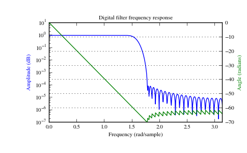

scipy.signal.freqz¶
- scipy.signal.freqz(b, a=1, worN=None, whole=0, plot=None)[source]¶
Compute the frequency response of a digital filter.
Given the numerator b and denominator a of a digital filter, compute its frequency response:
jw -jw -jmw jw B(e) b[0] + b[1]e + .... + b[m]e H(e) = ---- = ------------------------------------ jw -jw -jnw A(e) a[0] + a[1]e + .... + a[n]eParameters : b : ndarray
numerator of a linear filter
a : ndarray
denominator of a linear filter
worN : {None, int}, optional
If None, then compute at 512 frequencies around the unit circle. If a single integer, then compute at that many frequencies. Otherwise, compute the response at frequencies given in worN
whole : bool, optional
Normally, frequencies are computed from 0 to pi (upper-half of unit-circle). If whole is True, compute frequencies from 0 to 2*pi.
plot : callable
A callable that takes two arguments. If given, the return parameters w and h are passed to plot. Useful for plotting the frequency response inside freqz.
Returns : w : ndarray
The frequencies at which h was computed.
h : ndarray
The frequency response.
Notes
Using Matplotlib’s “plot” function as the callable for plot produces unexpected results, this plots the real part of the complex transfer function, not the magnitude.
Examples
>>> from scipy import signal >>> b = signal.firwin(80, 0.5, window=('kaiser', 8)) >>> w, h = signal.freqz(b)
>>> import matplotlib.pyplot as plt >>> fig = plt.figure() >>> plt.title('Digital filter frequency response') >>> ax1 = fig.add_subplot(111)
>>> plt.semilogy(w, np.abs(h), 'b') >>> plt.ylabel('Amplitude (dB)', color='b') >>> plt.xlabel('Frequency (rad/sample)')
>>> ax2 = ax1.twinx() >>> angles = np.unwrap(np.angle(h)) >>> plt.plot(w, angles, 'g') >>> plt.ylabel('Angle (radians)', color='g') >>> plt.grid() >>> plt.axis('tight') >>> plt.show()
